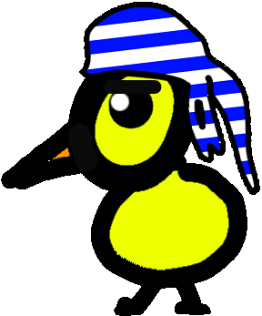
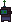

Learning journey:

Work and Academic background :|" style="margin-top: -180px; margin-left: 60px; rotate: 0deg; scale: 0.2;">
I have worked on a multiplayer VR game for the 2024 Paris Olympic Games with Virtual Room, a game company specializing in multiplayer virtual reality experiences.
I have completed a Master's Degree program in Computer Science at Sorbonne Université in Paris. There, I studied a large range of subjects, including Machine Learning, Multi-Agent Systems, Virtual Reality, Robotics, Human-Computer Interaction and Serious Games.
As part of my studies, I completed multiple research projects, such as a project focused on swarm robotics, as well as a research internship in bioengineering, specifically on organ-on-a-chip technology, at Okayama University, in Japan.
In 2022, I graduated with a double Bachelor's degree in Computer Science and Modern Literature from Sorbonne Université.
